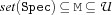
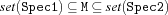
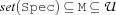
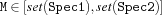

7.4 Finite Set Interval Variables
7.4.1 Declaring a Single Variable
-
var.decl {FS.var.decl ?M}
-
var.upperBound {FS.var.upperBound +Spec ?M}
-
var.lowerBound {FS.var.lowerBound +Spec ?M}
-
var.bounds {FS.var.bounds +Spec1 +Spec2 ?M}
7.4.2 Declaring a List of Variables
The following functions return a list Ms of length I and all its elements are constrained to finite set interval variables according to the following specifications.
-
var.list.decl {FS.var.list.decl +I ?Ms}For all elements
MofMs:
-
var.list.upperBound {FS.var.list.upperBound +I +Spec ?Ms}For all elements
MofMs:
-
var.list.lowerBound {FS.var.list.lowerBound +I +Spec ?Ms}For all elements
MofMs:
-
var.list.bounds {FS.var.list.bounds +I +Spec1 +Spec2 ?Ms}For all elements
MofMs: 
7.4.3 Declaring a Tuple of Variables
The following functions return a tuple Mt with label L and width I and all its elements are constrained to finite set interval variables according to the following specifications.
-
var.tuple.decl {FS.var.tuple.decl +L +I ?Mt}For all elements
MofMt:
-
var.tuple.upperBound {FS.var.tuple.upperBound +L +I +Spec ?Mt}For all elements
MofMt: -
var.tuple.lowerBound {FS.var.tuple.lowerBound +L +I +Spec ?Mt}For all elements
MofMt: -
var.tuple.bounds {FS.var.tuple.bounds +L +M +Spec1 +Spec2 ?Mt}For all elements
MofMt:
7.4.4 Declaring a Record of Variables
The following functions return a record Mr with label L and the fields Ls and all its fields are constrained to finite set interval variables according to the following specifications.
-
var.record.decl {FS.var.record.decl +L +Ls ?Mr}For all elements
MofMr: -
var.record.upperBound {FS.var.record.upperBound +L +Ls +Spec ?Mr}For all elements
MofMr: -
var.record.lowerBound {FS.var.record.lowerBound +L +Ls +Spec ?Mr}For all elements
MofMr:-
var.record.bounds {FS.var.record.bounds +L +Ls +Spec1 +Spec2 ?Mr}For all elements
MofMr: 